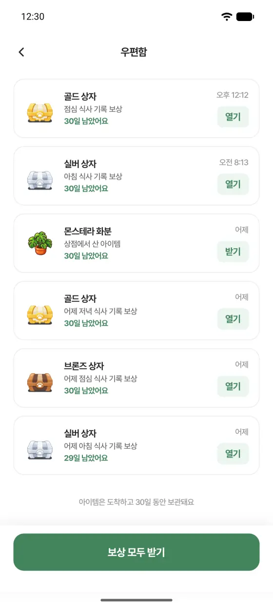
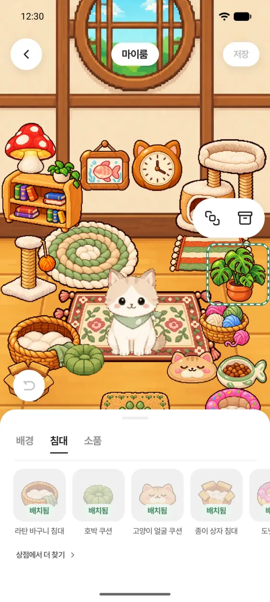
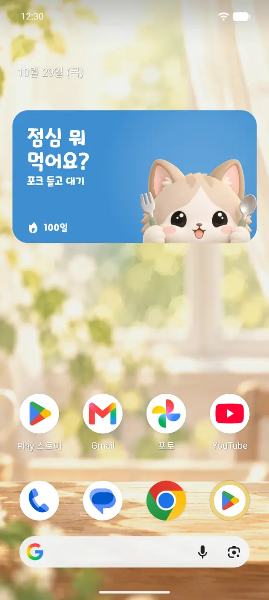

냐미의 먹방 컷신을 봐요
식사를 기록할 때마다 냐미가 밥을 먹는 짧은 먹방 컷신이 나와요.
한국과 일본 Android 출시
식사 사진 한 장을 찍으면 AI가 음식을 찾아 칼로리와 탄단지를 기록해요. 월간 캘린더에서 내 식습관을 볼 수 있고, 먹는 방식에 따라 고양이 냐미의 몸도 바뀌어요.
iPhone 앱은 아직 출시 전이에요


식사 사진을 찍으면 AI가 음식을 찾아 칼로리와 탄단지를 기록해요. 남긴 식사 기록은 월간 캘린더에서 날짜별로 볼 수 있어요.

끼니를 거르면 냐미가 홀쭉해지고 과식하면 통통해져요. 알맞게 먹으면 딱 좋아져요.
식사를 기록할 때마다 냐미가 밥을 먹는 짧은 먹방 컷신이 나와요.
식사 기록이 끝나면 우편함으로 보상 상자가 도착해요.

모은 코인으로 상점에서 가구와 방 배경을 살 수 있어요.

상점에서 고른 가구와 방 배경을 배치해 냐미의 방을 원하는 대로 꾸밀 수 있어요.

홈 화면 위젯에서 냐미가 끼니 때마다 집사를 기다려요.
